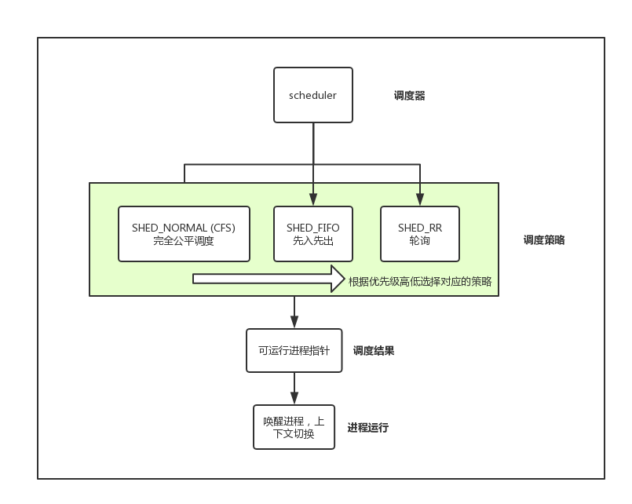
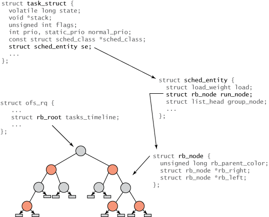
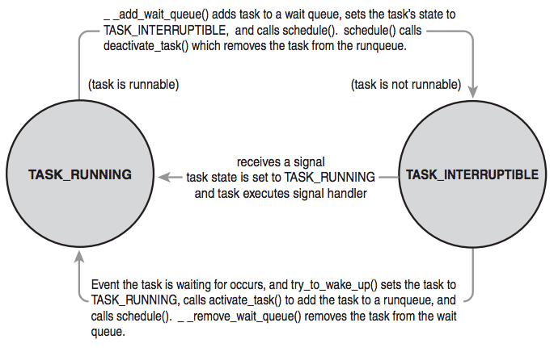

面向基础，深入学习linux进程调度的相关知识,源码阅读,主要介绍 linux公平调度 CFS (Completely Fair Schedule)，基于linux版本2.6.34。
看源码所感：“而世之奇伟、瑰怪，非常之观，常在于险远，而人之所罕至焉，故非有志者不能至也。”
调度程序即(scheduler)决定了多个程序运行策略，调度程序的最大原则在于能够最大限度的利用计算资源。
多任务系统可以划分为两类：非抢占式多任务(cooperative multitasking), 抢占式多任务(preemptive mulittasking).
Linux2.6.34内核中调度器的设计是模块化的，这样做的好处是允许不同可以有针对性的选择不同调度算法，其中最基本的调度算法为基于分时(time sharing)的技术。
整体架构如下，即调度策略是模块化设计的，调度器根据不同的进程依次遍历不同的调度策略，找到进程对应的调度策略，调度的结果即为选出一个可运行的进程指针，并将其加入到进程可运行队列中。

CFS完全公平调度： CFS的出发点基于一个简单的理念：即所有进程实际占用处理器CPU的时间应为一致，目的是确保每个进程公平的处理器使用比，即最大的利用了计算资源。FIFO先入先出队列：不基于时间片调度，处于可运行状态的SCHED_FIFO级别的进程比SCHED_NORMAL有更高优先级得到调度，一旦SCHED_FIFO级别的进程处于可执行的状态，它就会一致运行，直到进程阻塞或者主动释放。RR(Round-Robin)：SCHED_RR级别的进程在耗尽事先分配的时间片之后就不会继续执行。即可以理解将RR调度理解为带有时间片的SCHED_FIFO。FIFO和RR调度算法都为静态优先级。内核不为实时进程计算动态优先级，保证了优先级别高的实时进程总能抢找优先级比它低的进程。
主要针对CFS调度
实现部分主要4个点：时间记账，进程选择，调度器入口，睡眠和唤醒
整体涉及的数据结构图如下：
task_struct:为进程任务基础数据结构，存储着进程相关信息sched_entity:存储着进程调度相关的信息，其中run_node为可执行红黑树的节点ofs_rq: 存储着rb_root，红黑树的根节点task_timeline
所有的调度器都必须对进程的运行时间做记账。CFS不再有时间片的概念，维护了每个进程运行的时间记账，因为每个进程只在公平分配给它的处理器时间内运行。关键数据结构如下：
xxxxxxxxxx// sched.hstruct sched_entity { struct load_weight load; /* for load-balancing 用来做负载均衡 */ struct rb_node run_node; /* 红黑树运行节点 */ struct list_head group_node; unsigned int on_rq; /* 表明是否在可运行的队列中 */ u64 exec_start; u64 sum_exec_runtime; u64 vruntime; /* 虚拟运行时间 */ u64 prev_sum_exec_runtime; u64 last_wakeup; u64 avg_overlap; u64 nr_migrations; u64 start_runtime; u64 avg_wakeup;}进程选择是CFS调度算法的最重要的模块，当CFS调度器选择下一个要进行调度的进程时，就会选择具有最小vruntime的任务。涉及到获取最小值，以及有序数据结构，在各种场景下都很适用的红黑树就发挥了其作用。即用红黑树维护以vruntime为排序条件，存储着任务的运行情况。
进程的维护都在红黑树上进行相关操作：
1. 选择下一个任务
执行__pick_next_entity函数即获取了红黑树最左的节点（最小值）。
xxxxxxxxxx// kernel/sched_fair.cstatic struct sched_entity *__pick_next_entity(struct cfs_rq *cfs_rq) { // 获取缓存的最左节点 struct rb_node *left = cfs_rq->rb_leftmost; if (!left) return NULL; // 遍历获取最左节点，如果NULL则说明RB树中没有任何节点，则选择idle任务运行 return rb_entry(left, struct sched_entity, run_node);}2. 向红黑树中加入进程
这一步骤发生在进程变成可运行态，或者通过fork系统调用第一次创建进程时。
xxxxxxxxxxstatic voidenqueue_entity(struct cfs_rq *cfs_rq, struct sched_entity *se, int flags){ /* * 通过调用update_curr(),在更新min_vruntime之前先更新规范化的vruntime */ if (!(flags & ENQUEUE_WAKEUP) || (flags & ENQUEUE_MIGRATE)) se->vruntime += cfs_rq->min_vruntime; /* * 更新“当前任务”运行时统计数据 */ update_curr(cfs_rq); // 将on_rq置为1，nr_running++ (可运行进程数量) account_entity_enqueue(cfs_rq, se); if (flags & ENQUEUE_WAKEUP) { place_entity(cfs_rq, se, 0); enqueue_sleeper(cfs_rq, se); } update_stats_enqueue(cfs_rq, se); check_spread(cfs_rq, se); if (se != cfs_rq->curr) // 将se的红黑树节点，插入到红黑树中，并维护和更新最左节点 __enqueue_entity(cfs_rq, se);}static void __enqueue_entity(struct cfs_rq *cfs_rq, struct sched_entity *se){ struct rb_node **link = &cfs_rq->tasks_timeline.rb_node; struct rb_node *parent = NULL; struct sched_entity *entry; s64 key = entity_key(cfs_rq, se); int leftmost = 1; /* * Find the right place in the rbtree: */ while (*link) { parent = *link; entry = rb_entry(parent, struct sched_entity, run_node); /* * We dont care about collisions. Nodes with * the same key stay together. */ // 查找插入的合适的节点位置，二叉搜索树的性质 if (key < entity_key(cfs_rq, entry)) { link = &parent->rb_left; } else { link = &parent->rb_right; leftmost = 0; } } /* * Maintain a cache of leftmost tree entries (it is frequently * used): 维护和更新最左子节点 */ if (leftmost) cfs_rq->rb_leftmost = &se->run_node; // 连接红黑树节点 rb_link_node(&se->run_node, parent, link); // 对红黑树进行旋转和着色 rb_insert_color(&se->run_node, &cfs_rq->tasks_timeline);}3. 从红黑树中删除进程
这一步操作发生在进程阻塞，即进程变成不可运行状态或者当进程终止时。
xxxxxxxxxxstatic voiddequeue_entity(struct cfs_rq *cfs_rq, struct sched_entity *se, int sleep){ /* * Update run-time statistics of the 'current'. * 更新当前任务运行的虚拟运行时间 */ update_curr(cfs_rq); update_stats_dequeue(cfs_rq, se); clear_buddies(cfs_rq, se); if (se != cfs_rq->curr) // 辅助函数，即从红黑树中删除节点 __dequeue_entity(cfs_rq, se); // 进行一次记账account account_entity_dequeue(cfs_rq, se); // 更新最小的虚拟运行时间，以备下一次的调度 update_min_vruntime(cfs_rq); /* * Normalize the entity after updating the min_vruntime because the * update can refer to the ->curr item and we need to reflect this * movement in our normalized position. */ if (!sleep) se->vruntime -= cfs_rq->min_vruntime;}static void __dequeue_entity(struct cfs_rq *cfs_rq, struct sched_entity *se){ if (cfs_rq->rb_leftmost == &se->run_node) { // 维护最左子节点 struct rb_node *next_node; next_node = rb_next(&se->run_node); cfs_rq->rb_leftmost = next_node; } // 从红黑树中删除节点 rb_erase(&se->run_node, &cfs_rq->tasks_timeline);}
进程调度器的入口函数为schedule()，总体流程即为选择合适的调度策略选出下一个需要被调度的进程任务，然后进行一次上下文切换，将进程置为运行态。
xxxxxxxxxx/* * schedule() is the main scheduler function. */asmlinkage void __sched schedule(void){ struct task_struct *prev, *next; // prev 和 next标识之前调度的进程任务和当前要调度的进程任务 unsigned long *switch_count; struct rq *rq; int cpu;need_resched: // 需要重新调度标签 preempt_disable(); cpu = smp_processor_id(); // 获取cpu的可运行任务队列 rq = cpu_rq(cpu); rcu_sched_qs(cpu); prev = rq->curr; switch_count = &prev->nivcsw; release_kernel_lock(prev);need_resched_nonpreemptible: schedule_debug(prev); if (sched_feat(HRTICK)) hrtick_clear(rq); raw_spin_lock_irq(&rq->lock); update_rq_clock(rq); clear_tsk_need_resched(prev); if (prev->state && !(preempt_count() & PREEMPT_ACTIVE)) { // 检查当前进程运行状态 if (unlikely(signal_pending_state(prev->state, prev))) // 当前进程没有阻塞，则将当前进程的状态置为运行状态 // TASK_RUNNING: 进程是可运行的，或在运行队列中等待执行 prev->state = TASK_RUNNING; else // 当前进程是阻塞状态，则将当前进程从进程可运行队列中移除 deactivate_task(rq, prev, 1); switch_count = &prev->nvcsw; } pre_schedule(rq, prev); if (unlikely(!rq->nr_running)) idle_balance(cpu, rq); put_prev_task(rq, prev); // pick_next_task 优先级从高到低依次检查每个调度策略类，并返回可运行进程的指针 next = pick_next_task(rq); if (likely(prev != next)) { // prev!=next 即需要新一次的调度 sched_info_switch(prev, next); perf_event_task_sched_out(prev, next); rq->nr_switches++; // 运行队列的curr指针指向next rq->curr = next; ++*switch_count; // 进行一次调度，即上下文切换，虚拟内存映射的切换，保留栈信息，相关寄存器等 context_switch(rq, prev, next); /* unlocks the rq */ /* * the context switch might have flipped the stack from under * us, hence refresh the local variables. */ cpu = smp_processor_id(); rq = cpu_rq(cpu); } else raw_spin_unlock_irq(&rq->lock); post_schedule(rq); if (unlikely(reacquire_kernel_lock(current) < 0)) { prev = rq->curr; switch_count = &prev->nivcsw; goto need_resched_nonpreemptible; } preempt_enable_no_resched(); if (need_resched()) // 需要重新调度，则返回重新调度标签 goto need_resched;}
休眠（被阻塞）状态的进程处于不可执行的状态。进程休眠的原因有多种多样，但通常来说都是等待某一事件的发生，例如等待I/O, 等待设备输入等等。
内核对于休眠和唤醒的操作如下：
TASK_INTERRUPTIBLE)，然后从可执行红黑树中移除该进程，并将进程放入等待队列TASK_RUNNING)，进程从等待队列移入可执行红黑树中休眠或者阻塞状态有两种：可中断休眠(TASK_INTERRUPTIBLE), 不可中断休眠(TASK_UNINTERRUPTIBLE). 通常进程的休眠，为可中断休眠，即进程进入休眠，等待某一事件发生。一旦事件发生，或者满足条件，内核将会把进程状态置为运行，并将进程从等待队列中移除。

进程进入等待休眠队列如下：
xxxxxxxxxxvoid wait(){ // 创建一个等待队列的项 'q' DEFINE_WAIT(wait); // 把自己加入到等待队列中 add_wait_queue(q, &wait); while(!condition){ //condition 为等待的事件 prepare_to_wait(&q, &wait, TASK_INTERRUPTIBLE); if(signal_pending(current)){ // 处理信号 } // 进行一次调度 schedule(); } finish_wait(q, &wait);上下文切换，处理器从即为从一个可执行的进程切换到另一个可执行的进程，其中包含了两个关键的函数.
switch_mm：把虚拟内存从上一个进程映射切换到新进程中switch_to：负责将上一个处理器状态信息切换到新进程的处理器状态。包括保存，恢复栈信息和寄存器信息。内核必须知道在什么时候需要调用schedule()来执行一次调度, 而不是靠用户去执行schedule()函数，为此内核提供了一个need_resched标志位，表明是否需要重新进行一次调度。
need_resched标志位为1时会触发内核进行一次调度，有如下几个情况：
用户态抢占(重新调度)
内核态抢占(重新调度)
schedule()Linux内核的调度程序CFS，尽可能的满足了各个方面的需求，并找到了一种在调度周期和吞吐量之间的平衡。
学习Linux内核进程调度，让我窥见了程序的本质，数据结构是程序的基石，红黑树在各个地方的运用足以展现出其重要性。Linux进程调度的设计，兼顾了可伸缩性，尽可能的提高了资源的利用率。
在学习和总结过程中，看了Linux内核源码，并加入了一些自己的总结和理解，还需要在通往大牛的路上继续努力。